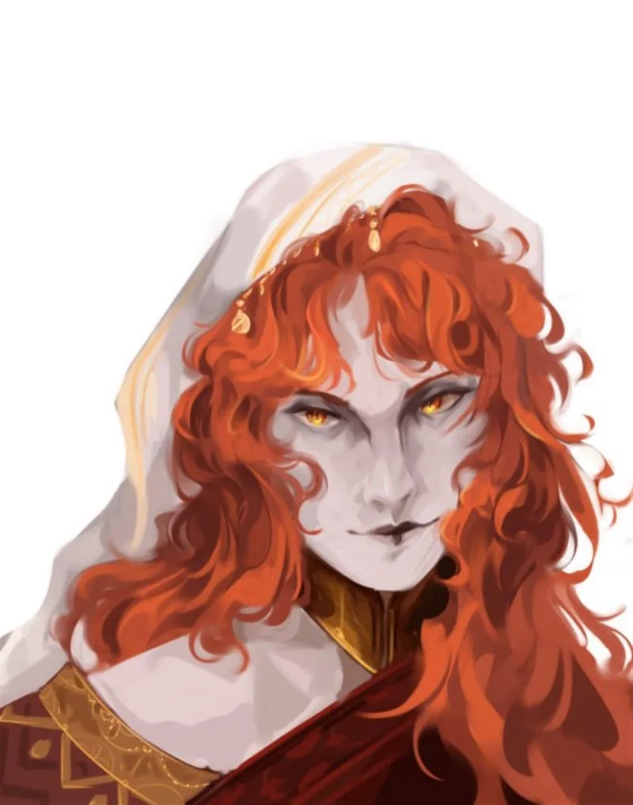
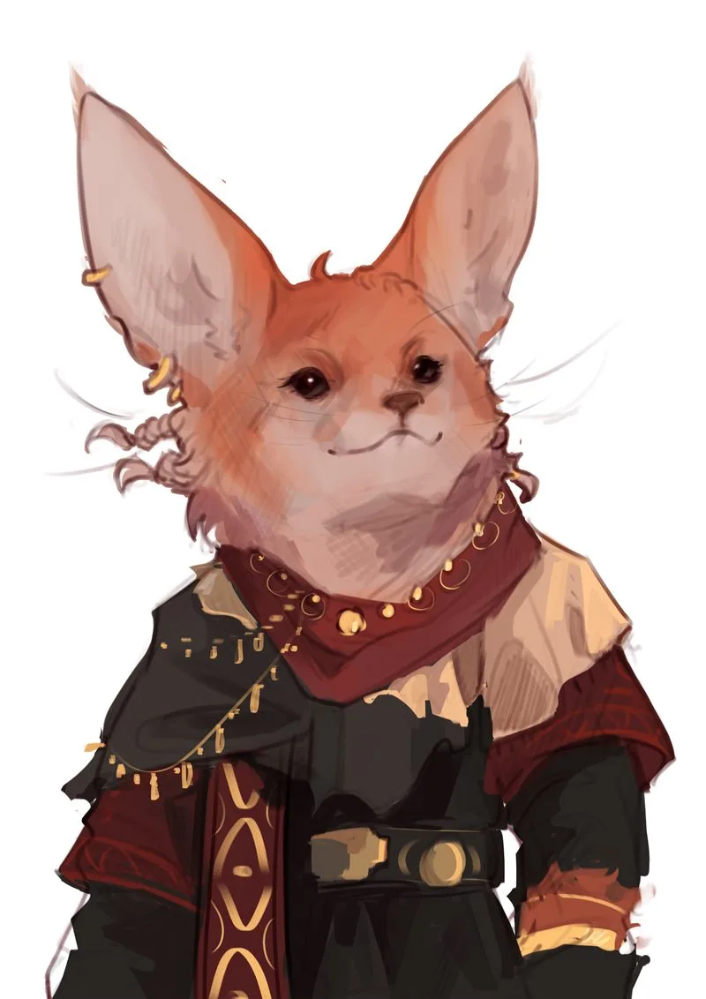
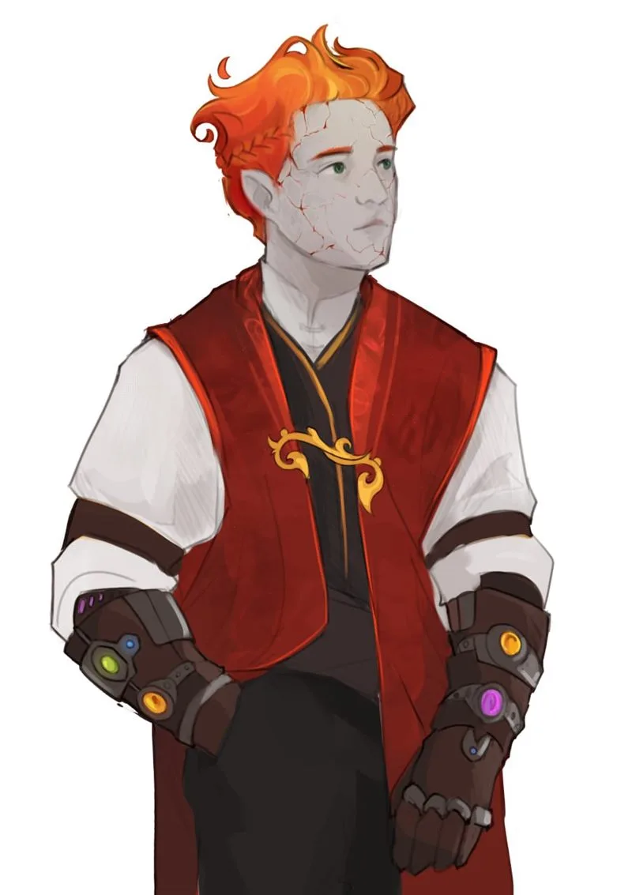

Ushta-te
Долгая кампания по D&D 5e в мире Орвей, разворачивающаяся в Аль'Ваэре. История началась на разбитых караванных путях пустыни и привела героев к храму полубогини Аккарат, чьё имя пустыня старалась забыть.
Мир Аль'Ваэры — великая пустыня контрастов, где города-государства гордятся стенами, а кочевники хранят старые легенды. Среди бескрайних барханов, вдоль караванных путей, пересекающих Горькое море и окрестности городов Кехабата, Ма'Халлама и Аш-Шахра, разворачивается история четырёх героев:
Их путь лежит через легенды о забытых богах, интриги кочевников-тосабеев, тайны Синдиката и храмы Аккарат — богини скорпионов, ядов и горькой правды, чья кровь ведёт к суровому концу.
Кампания охватывает два первых модуля — «Исток» (сессии 1–10) и «Аккарат» (сессии 11–16). Ниже — развёрнутое изложение сессий по заметкам мастера.

Изгой из кочевого племени, выкупленная из рабства пастором хушитов Халидом аль'Шарифом. Жрица Фатимы, гадающая на картах: предсказывает будущее, соединяет судьбы и исцеляет страждущих.
Пустынная колода, которой жрица гадает на знамения: значение выпавшей карты задаёт ответ «Карт Фатимы» и направление выбора.

Бунтарка из кочевого табора шуалов, сбежавшая в пустыню. Дерзкая мечтательница и неисправимая воровка: выслеживает с крыш, скачет по пескам и верит, что Аль'Ваэра заслуживает быть зелёной снова.

Из семьи визиря Ма-Халлама, ученик исчезнувшего Боевого кузнеца. Стремится достичь знаний и возможностей, недоступных смертным.
Песчаная буря обрушивается на караван-сарай «Солёные Ветра». Из стены летящего песка возвращается полуразрушенный караван из Ма-Халлама. С гамальда падает мёртвый погонщик. При нём находят свёрток с древней реликвией и письмом, адресованным хозяину стоянки.
В письме говорится, что в рудниках Эр'Тальэшах найдена древняя реликвия с неизвестными символами. Её просят передать визирю Халиду аль-Шарифу. Письмо подписал Фарис, управляющий рудником. Позже на героев нападают песчаные сущности, но они отбиваются.
Отряд выдвигается из «Солёных Ветров» в сторону Ма-Халлама, но теряется в пустыне и останавливается у разрушенной башни, каким-то образом связанной с Фатимой. Нахра — жрица Фатимы. Ночью на путников нападают гигантские скорпионы. Их спасает Арид, акрабим-следопыт, и уводит группу в деревню Наджран.
В деревне герои ждут выздоровления Идриса. В благодарность они помогают Ариду с детёнышами пустынных червей и приносят плоды лунного кактуса для Маны, жительницы деревни.
Арид предлагает отвести отряд в город Захират, где живёт его подруга Самира — лекарь, дочь Маны. По пути герои натыкаются на разграбленный караван и находят ценности: прозрачный аметист, золотые и серебряные монеты, а также загадочный кулон «Сумрачная темница», позволяющий хранить внутри существ. Икки использует его, чтобы держать там своего питомца сираниса.
Отряд прибывает в Захират. Нахра, Икки, Кхемед, Идрис и Арид знакомятся с Самирой. В её домике тесно, поэтому группа останавливается в таверне «Сочный Финик»: свободна лишь одна подсобная комната, остальное занял караван из Ма-Халлама.
Кхемед и Идрис идут в кузницу к Азизу, где встречают Убара — наёмного убийцу с серебристым шрамом на глазу, который ждёт, пока отполируют его нимчу. Убар заводит осторожную беседу с дженази, но его внезапно отзывает подбежавший мальчуган.
Тем временем Нахра получает угрожающее письмо: в полночь ей нужно явиться одной в игорный дом «Золотая Звезда», иначе её друзей «станут хоронить по частям». Письмо адресовано лично ей — значит, у преследователей есть о ней сведения.
За кулисами: Нахра некогда дала дочери богатого купца Лисара траву-дурман для любовного приворота, предупредив не смешивать её с алкоголем. Тинара нарушила совет и погибла. Лисар нанял Убара, чтобы отомстить. План заключался в том, чтобы схватить Нахру живой и продать её в рабство Лисару, а её спутников устранить.
Нахра передаёт амулет-украшение Идрису.
Отряд решает действовать. Идриса отправляют предупредить Арида и Самиру, присмотреть за питомцами и идти к караван-сараю «Шепот Барханов». Нахра, Кхемед и Икки идут в игорный дом: Нахра — через главный вход, Кхемед — через служебные помещения, Икки — через окно на балкон, чтобы всё видеть.
Кхемеду не удаётся скрыться в главном помещении, и Убар заговаривает с ним. Они садятся за стол. Позже Нахру также приглашают за их стол. Убар заказывает «что-то особенное» — снотворное зелье, чтобы усыпить гостей. Но Кхемед магией очищает напитки себе и Нахре. Снотворное не действует. Убар вскакивает, официанты пытаются схватить героев с тряпкой, пропитанной порошком, — безуспешно.
Убар превращает происходящее в шоу: объявляет публике поединок «Хищника» против «жертв», и толпа делает ставки на кровь. Герои одолевают его. По условию они получают «три минуты, чтобы исчезнуть».
Измученные, у всех по одному хиту, герои совершают побег из города. Они встречают Идриса и Арида и прячутся в скалистой местности, в пещерах.
Отряд прячется в пещере между «Шепотом Барханов» и Захиратом. По пятам идёт Синдикат в лице Убара. Группа выходит на торговый путь и встречает караван Надира Хаята.
По пути герои находят скелет гамальда, попавшего в бурю. При нём — свёрток с письмом от Хакима аль'Сарида на тосабейском. В письме сказано: три племени уже «склонили колени», несогласных ждёт участь «петь в вихрях Шамаля», а «Солнце Пустыни» осветит путь к «Сердцу Барханов». Письмо заверено отпечатком ладони из крови с родовым знаком аль'Саридов. Это намёк на то, что Хаким собирает пустыню в один кулак.
В караван-сарае шуалов «Шепот Барханов» героев встречает баро табора — рыжий шуал Златан, посредник между торговцами и кочевниками-тосабеями. Икки передаёт ему письмо от купца Захира: тот готов сотрудничать с табором и продавать через него сиранисов. В это же время в караван-сарае находятся трое тосабеев из клана Кахин аль-Анвад. Они ждут гонца с посланием, которого так и не дожидаются.
Отряд нанимается в караван Надира Хаята — по одному золотому за отрезок пути. Нанимателем считается Кхемед. Перед отъездом тосабеи покидают караван-сарай раньше остальных.
В дороге — зной и надвигающаяся песчаная буря. Стражник Газир, дженази земли, чувствующий вибрации песка, уводит караван в скалы Костяного каньона. Там герои находят вход в древний храм полубогини Аккарат — полуженщины-полускорпиона, ребёнка Ахурамазды.
В храме — статуя и плита с точками в форме созвездия Скорпиона. Медальон-звезда вставляется в одну из точек, и священное место активируется, восстанавливая статую Аккарат.
Далее — караван-сарай акрабимов «Серебряный Сатин». Хозяин Тарим, он же Карим, хозяйка Амина, дочь Гайда. Акрабимы — верующие в божество скорпионов; они ищут святилища Аккарат. Узнав о находке героев, они просят отыскать остальные точки созвездия, чтобы богиня набрала сил и её имя не было забыто навсегда. Надир Хаят заключает сделку: письмо Захира становится соглашением о разведении и продаже сиранисов для табора Златана.
Отряд платит за ночлег в «Серебряном Сатине» и получает расчёт за сопровождение. Акрабимы подробнее рассказывают об Аккарат — богине скорпионов, ядов и лекарств, возмездия и горькой правды, а также о её священных местах.
Первая цель — токсичный оазис Аккарат: вода гниёт ядовитой жижей, повсюду кости погибших. У гнилого источника — полуразрушенная статуя богини с плитой созвездия. Ключ-медальон восстанавливает статую, и оазис оживает, становясь лечебным: временные хиты, лечение ран.
Далее — святилище Аккарат, захваченное хитинами и холдритом. Внутри: зал с фресками истории богини, загадка — «Я оружие, но в руках мудреца — дар...» — ответ: яд. Затем зал со статуей. В тайнике герои находят свиток с рецептом противоядия, кинжал из жала скорпиона с вековым ядом и рассыпающуюся карту с отметкой другого святилища — «под знаком трёх лун». В скрытой комнате — свитки молебнов лечения, зелья, флакон яда и жезл возмездия жреца Аккарат.
После боя с чудовищем локации Нахра с Идрисом торопливо покидают пещеру. Кхемед остаётся у статуи и спрашивает её: «Что будет дальше?» Аккарат отвечает ему: «Я могу даровать тебе те возможности, которые ты не сможешь достичь сам. Ту магию, которая доступна только избранным». Это задел на его дальнейшую связь с богиней.
Утро после битвы в храме. Нахра уводит Идриса прочь. Кхемед стоит у статуи. Из-под пьедестала выползает маленький скорпиончик и направляется к выходу — за Нахрой и Идрисом. Икки разделывает тела холдритов, добывая кровь и мех.
Отряд остаётся ещё на день в «Серебряном Сатине», затем прибывает в торговый город Аш-Шахр, выросший вокруг оазиса. Там царит праздник «Ночь Золотых Пальм» — фестиваль с танцами, музыкой и боями на палках.
Караван останавливается в караван-сарае «Приют Братьев Хаятов» в Аш-Шахре, который принадлежит брату Надира. Нахра гадает на картах о том, что ждёт отряд в городе.
Герои просыпаются в Аш-Шахре, в караван-сарае «Приют Братьев Хаятов», у Хабиба, брата Надира. Город готовится к Ночи Мавлида — празднику основания города: тёплые бумажные фонарики, духовные песнопения-нашаиды, золотистый благословенный ветерок.
Надир делится тревожными новостями: брат Хабиб задержался с поставкой маслин и масла из оазиса Аль-Рамаль. На дорогах, у «Песчаных Врат», неспокойно — тосабеи ведут себя вызывающе, как хозяева.
В городе герои участвуют в празднике. Нахра гадает на картах: Финик. Икки — на Фенька и Флейту. Кхемед — на Легенду и Карту. Идрис — на Солнце.
Тосабеи наглеют: моют ноги в священном фонтане, отбирают у старика финики. В полночь начинается диверсия: взрывы у «Песчаных Врат» и казарм гази. Диверсанты-тосабеи в городской одежде атакуют толпу, мосты и ворота с криками: «За Хакима! За чистую пустыню!» Оказывается, взрывчатку привезли в кувшинах с «благовониями» — именно тот груз, что подвёз Хабиб, обманутый незнакомцами. Раскаявшийся Хабиб признаётся, что его обманули, и начинает помогать городу.
Финал: на рассвете у стен города встаёт бескрайний лагерь армии Хакима. Осада Аш-Шахра начинается. Город окутывает купол из красно-золотистой пыли, происходит какой-то ритуал.
Аш-Шахр истекает кровью: штурм, пожары, хаос. Все источники воды в городе отравлены, город в панике. Кхемед в погоне за диверсантами попадает в ловушку во дворе заброшенной гончарной мастерской — «Пасть Скорпиона». Засада воинов, из которой он чудом сбегает. Идрис пытается вразумить стражу, но его задерживают и отводят в темницу.
Нахру допрашивает Фарид, глава стражи. Из-за того, что она кочевница, её принимают за шпионку. Хабиб на глазах у всех публично признаётся в том, что по неведению помог завезти компоненты взрывчатки и яда. Фарид приказывает ему вести отряд на склад диверсантов, чтобы искупить вину.
Икки с крыш видит всё: агентов Убара, предателя-стражника среди конвоя и три загадочные фигуры в бинтах, из которых сыплется песок, а в прорезях — багровый свет. Из-за опрокинутой телеги выходит сам Убар: «Эта особа является добычей Синдиката. Я пришёл, чтобы её забрать». Он хочет забрать Нахру.
Начинается бой с Убаром и его песчаными копиями, в котором Убар погибает. Нахра без сознания.
Нахра получает видение Фатимы: богиня говорит, что Аккарат — «дитя слабости», «песок в ране мира», порождённое гневом и гордыней Ахурамазды. Забытье для неё — милость, а не наказание. Наказ Фатимы: не восстанавливать статую Аккарат, не давать старой тени нового тела. «Твоя верность — будущему. Равновесию». Фонтан в центре — это разрушенная статуя Аккарат, которую когда-то переделал Визирь Мавлид. Чтобы восстановить статую, нужны части, которые лежат в мечети.
Утро. Город под осадой. Управляющий городом — Джамиль, хафиз. Он даёт Кхемеду бумагу, позволяющую действовать от его лица. Части древней статуи скорпиона спрятаны в мечети Джа'Илама. Имам Ясир считает их «скверной» и держит где-то в подвале, за стенной панелью или среди конфискованных «идолов». Просто так их не отдадут.
В крепости Касбах герои освобождают Идриса с помощью переговоров. Среди офицеров крепости прячутся люди Синдиката, готовые узнать Нахру.
Герои возвращаются к центру города, к фонтану. Пока Кхемед пытается понять, как ему добраться до частей статуи Аккарат в мечети, Нахра берёт на себя ответственность и проводит ритуал, пришедший ей в голову. Во время ритуала луч света от луны падает на фонтан и разрушает его до пыли и песка. Воды в городе стало меньше, но источники очистились. Купол, накрывавший город из-за ритуала, разрушается из-за луча. Тосабеи, бравшие город в осаду, по какой-то причине снимают осаду и бегут.
Рассвет. Фонтан Визиря Мавлида исчез — на площади остался лишь ровный песок. Исчезла и гниль из воды: воду в колодцах можно пить. Горожане плачут и смеются, не понимая, что произошло. Хушитка плачет, что «Фатима услышала». Дженази провожают взглядом засохшие пальмы.
Нахра разрушила статую Аккарат по приказу Фатимы, проведя ритуал. Это спасло воду, но вместе со статуей уничтожило и древний оазис, связывавший город с богиней. Она стоит на крыше и слышит: «Ты сделала, что должно». Икки видит Нахру и впервые по-настоящему осознаёт её поступок. Кхемед — в ярости и опустошении: грамота хафиза, которой он хотел спасти каменную статую, теперь бесполезна. Вопрос, жгущий его изнутри: «Почему ценой спасения стало уничтожение того, что я считал правильным?»
Кхемед возвращается к хафизу города, но застаёт там не только хафиза, но и члена Синдиката с чёрной маской. Чёрная маска благодарит за то, что члены группы Кхемеда смогли спасти город чудом, совершённым Нахрой. В знак благодарности они перестанут за ней охоту. Но закрыть глаза на убийство члена Синдиката он тоже не может, поэтому предлагает компромисс: когда они прибудут в Ма'Халлам, с ними свяжутся, чтобы они сделали для Синдиката дело, и тогда они будут в расчёте.
Отряд с Надиром, Хабибом и Газиром покидает Аш-Шахр. В пути Кхемед с Надиром выясняют, что артефакт, полученный в караван-сарае «Солёные Ветра», каким-то образом связан с артефактом Надира. Артефакты связаны и указывают путь.
В итоге герои с караваном останавливаются в караван-сарае «Тысяча дорог». Ночью артефакт, найденный в святилище Аккарат, её «Сердце», начинает действовать: тёплый шёпот, тени скорпионов по стенам, навязчивое желание выйти в ночь. Кхемед поддаётся зову и идёт в скалы, где его окружают акрабимы-фанатики клана «Жалящий Коготь»: «Тот, кто носит Сердце. Мы ждали».
Утром Идрис замечает пропажу. Нахра гадает на картах: Скорпион, Песчаная Могила, перевёрнутая Звезда Пустыни — и Колодец наверху: «Спасение не снаружи. Оно внутри него». Газир ведёт группу по следам к пещерам.
Клан акрабимов под руководством старейшины Зар'рака, «Жалящего Клинка», готовит ритуал: вживить «Сердце» в грудь дженази огня — идеальный сосуд, — чтобы Аккарат получила воплощение и голос. Ритуал требует полнолуния, крови Кхемеда с ядом скорпионов, трёх жрецов и самого артефакта.
Кхемед в цепях у алтаря. Аккарат искушает его: «Ты будешь моими руками, моим голосом». Кхемед решает: поддаться, сопротивляться или тянуть время — каждое решение приближает или отдаляет захват контроля над ним. Группа входит в пещерный лабиринт с ядовитыми испарениями и засадами. В итоге Нахре и Икки удаётся прервать ритуал, убив трёх жрецов. Слова Нахры — «Ты — не пыль. Ты — живой. Ты — Кхемед» — дают ему силу сопротивляться. Но отпечаток ритуала остался на Кхемеде: его ноги превратились в сгусток мяса и костей, он потерял ноги, которые были в процессе превращения.
Жаровни догорают. Статуя Аккарат медленно рассыпается в песок — обсидиановые глаза гаснут, черты трескаются, камень превращается в прах. Аккарат больше нет в этом святилище.
Кхемед снимает поножи и видит, что под бронёй ног больше нет — вместо них скрученные жгутом мешки плоти, оставшиеся после попытки ритуала. Броня теперь служит ему ногами. Идрис молча стоит рядом, глядя на входы: его работа ещё не закончена.
Сбежавшие двое акрабимов унесли с собой вещи Кхемеда: чертежи, инструменты и артефакт. Перед отрядом встаёт выбор: вернуться в «Тысячу дорог» к каравану или преследовать беглецов. В итоге они преследуют и убивают их, забирая свои вещи.
Ночью Нахра решает уничтожить артефакт Аккарат. Когда артефакт разрушают, Кхемед чувствует, как из него вырывают часть души. Аккарат ранена, но не убита — часть её впиталась в него и будет напоминать о себе снами и шёпотом.
{kind=link}
{kind=link}
{kind=link}